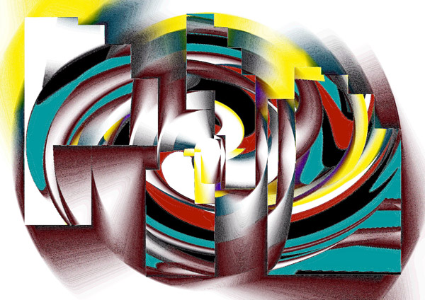
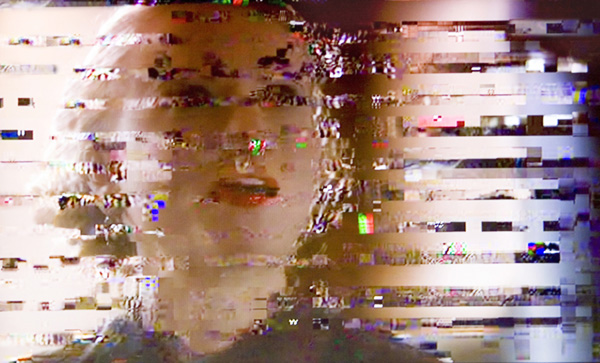
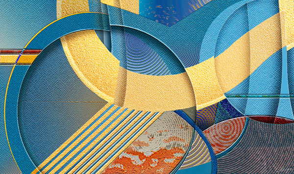
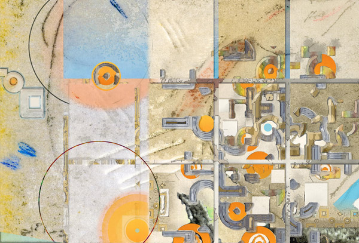
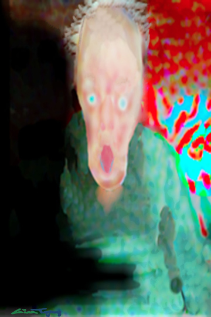
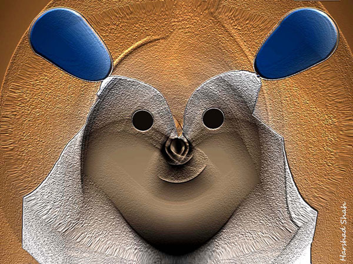
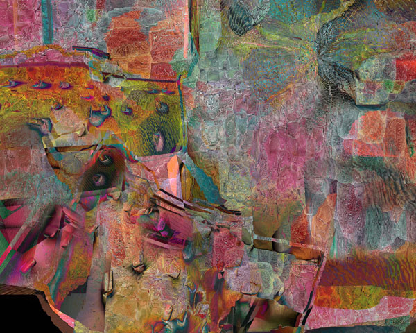
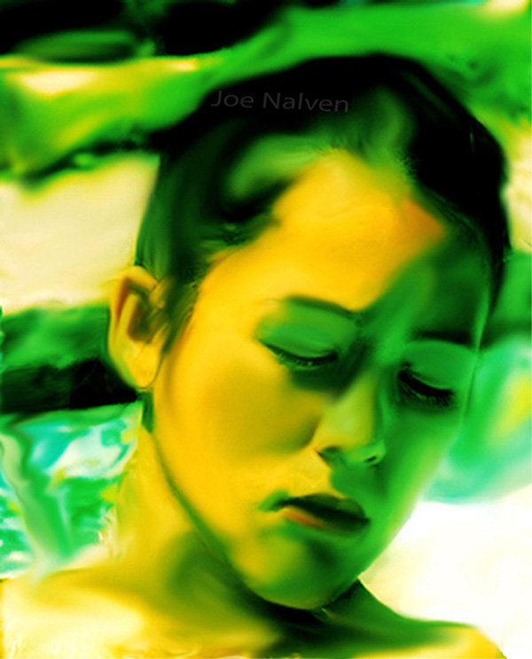
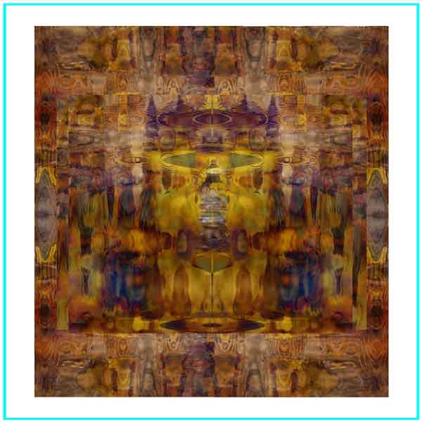

IMAGES OF THE DAY 22
01/21/2022 - 01/31/2022
Click image to visit MOCA gallery where image resides
Schachtelung (Nesting) 
by Nina Koelman
01/21/2022
The Singer 
by Sherry Karver
01/22/2022
Reinventing the Wheel 
by Shige Yamada
01/23/2022
Beaches 
by Jay Wilson
01/24/2022
White House 
by Gina Topping
01/25/2022
Easter Bunny 
by Harshad Shah
01/26/2022
When the Going Was Good 4
by Pauline van de Ven
01/27/2022
Sunset on the Rock 
by Vincenzo Corrado
01/28/2022
Bodhisattva
by Randy Hall
01/29/2022
Meditation in Water 
by Joe Nalven
01/30/2022
AZ-Canyon Legends 1 
by Monica Malbeck Schut
01/31/2022